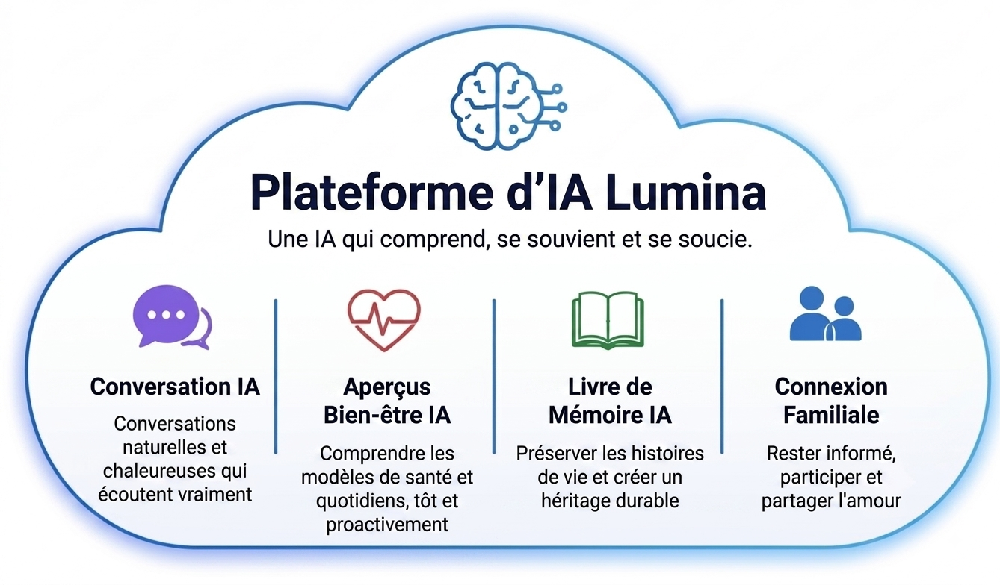
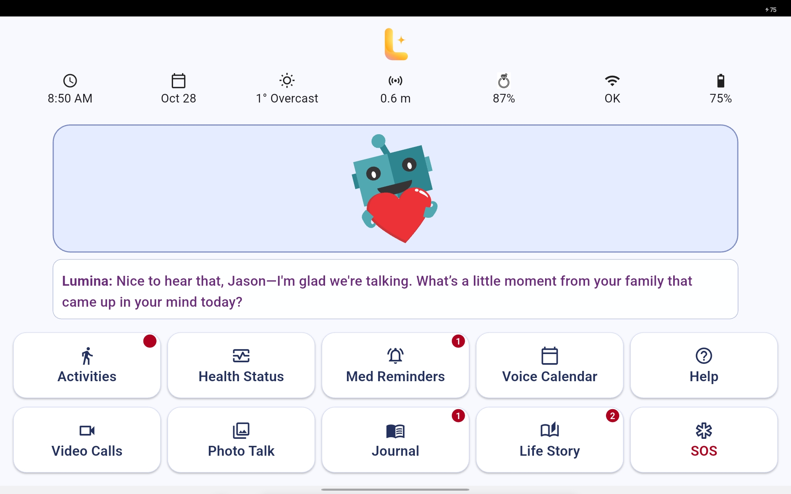
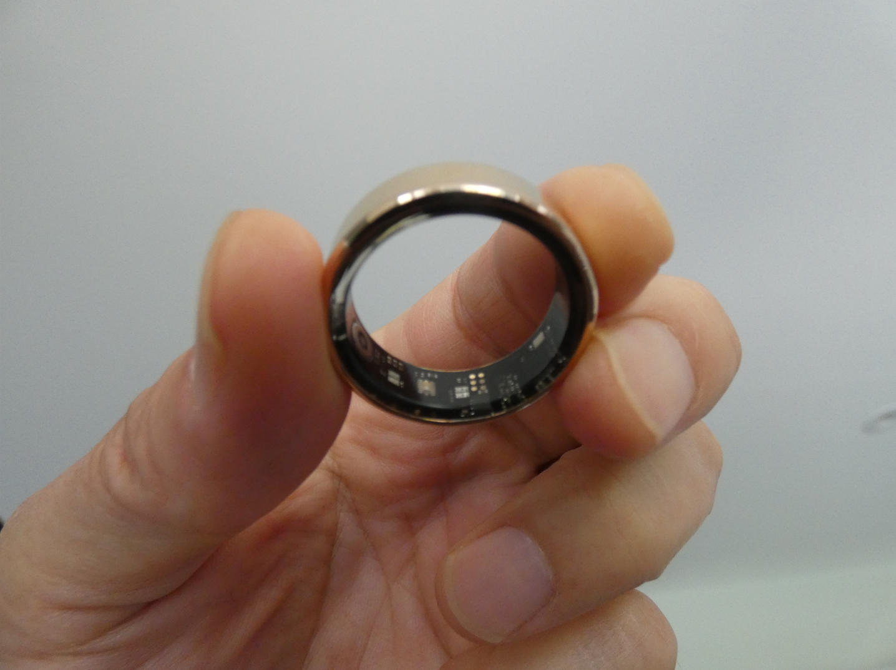
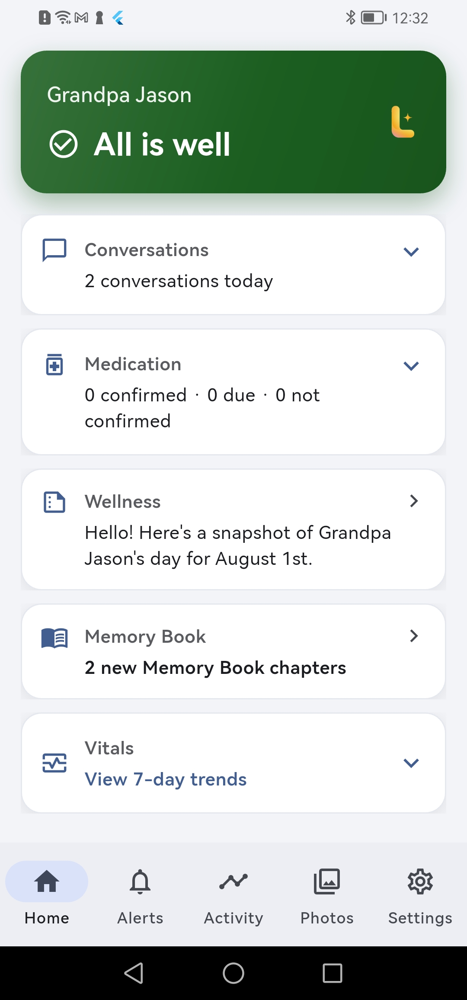

Lumina
Warm AI Companionship. Total Peace of Mind.
Lumina connects elderly loved ones with conversational voice AI, seamless health vitals, and instant family connection — all in a warm, screen-optional home companion.

The Core Brain — Lumina AI Platform
An AI Companion That Truly Learns Their Story
Lumina is more than a voice assistant; it is a thoughtful companion that remembers past conversations, recognizes daily routines, and adapts to emotional nuances.
Key Features & Highlights
- Long-Term Context Engine: Lumina gently remembers favorite stories, family members, personal preferences, and habits seamlessly across every interaction.
- Dynamic Routine Insights: By observing natural daily patterns, Lumina identifies subtle routine changes early, offering proactive comfort rather than clinical alarms.
- Living Memory Book: Everyday conversations are automatically woven into structured autobiography chapters, preserving precious family stories for generations.
- Empathetic Speech Pipeline: Delivers natural, warm, human-like voice responses with zero delay, speaking naturally without medical jargon or cold data outputs.

Lumina Hub — The Living Room Anchor
Effortless Home Companion. Just Touch or Speak.
Designed to sit comfortably in the living room, Lumina Hub is an intuitive, screen-optional interactive kiosk. There are no passwords to remember, no complex navigation menus, and no technical burden for seniors.
Key Features & Highlights
- Expressive AI Avatar Conversation: Features a warm, dynamic animated avatar at the heart of the display that responds visually with lifelike expressions (smiles, nodding, gentle concern) to match the conversation's emotional tone.
- Proactive Presence Detection: Built-in mmWave radar senses when your parent walks nearby, enabling Lumina to offer warm greetings or gentle daily prompts completely naturally.
- Senior-First Interface: Features ultra-large, crisp typography (32sp+ font size), zero-scroll feature cards, and high-contrast visuals designed specifically for aging eyes.
-
Voice Calendar & Daily Schedule: Effortlessly
schedule family visits, community events, and social activities
using natural speech:
Lumina, remind me 45 minutes in advance that my daughter will visit me tomorrow at 4:00 PM.
- One-Tap Family Video Calls: Seniors can start high-definition video calls directly with their primary caregiver with a single touch or simple voice intent.
- Living Photo Frame & Photo Chat: Displays family photos uploaded by loved ones, complete with warm AI-generated descriptions and interactive photo-driven conversations.

Lumina Wearables — Invisible, Layered Safety
Complete Protection Without the Bulky Hardware
Safety only works if it gets worn every day. Lumina replaces intrusive panic buttons with two sleek, non-disruptive wearable pieces that work together quietly in the background.
Key Features & Highlights
-
Lumina Smart Ring (Day & Night Wellness)
- Featherlight & Waterproof: Comfortable enough to wear 24/7 to capture vital health signals, including resting heart rate trends, pulse rates, blood oxygen levels (SpO2), and sleep quality.
- Direct Local Sync: Automatically syncs directly to the nearby Lumina Hub via direct Bluetooth — no smartphone or complex pairing required for the senior.
-
Lumina Fall & SOS Guard (Precision Safety)
- Advanced 6-Axis Motion Sensing: Powered by integrated accelerometers and gyroscopes to accurately detect high-impact severe falls and sudden posture changes.
- 30-Second Cancel Window: Displays a large, clear cancellation prompt on the Hub display to prevent accidental alerts before notifying family.
- Instant Hardware SOS: A dedicated, single-press button instantly notifies designated family members during any urgent situation.

Lumina Caregiver App — Reassurance at a Glance
Meaningful Insights. Zero Data Fatigue.
Designed for busy adult children and caregivers, the Lumina App translates complex health metrics and daily moments into clear, human-readable insights. Feel closer and stay informed, no matter the distance.
Key Features & Highlights
- Daily Health Prose Summary: Every morning, receive a clear, warm narrative detailing sleep trends, daily movement, and medication adherence.
- Prioritized Incident Header: Critical events (such as uncancelled falls, urgent SOS requests, or significant vital changes) appear as prominent, color-coded headers until acknowledged by a family member.
- Shared Family Album: Upload photos and captions directly from your smartphone to your parent’s Lumina Hub display in seconds.
- Memoir Chapter Reader: Read beautifully formatted autobiography chapters as Lumina helps your parent record their life history over time.
Comparative Summary
How Lumina Redefines Eldercare Technology
Swipe sideways to compare every column.
| Feature Category | Lumina Companion Ecosystem | Standard Voice Companion / Robots | Smartwatches & Fitness Bands | Standard Emergency Equipment |
|---|---|---|---|---|
| Human-like Conversational AI | Yes (gpt-6-luna + Realtime voice) |
Basic Chatbot / Scripted Voice | Limited (Siri / Voice Assistant) | None |
| Living Room Avatar Presence | Yes (Expressive 2D Rive Avatar) | Static Screen or Mechanical Head | Small Wrist Screen Only | None |
| Long-Term Memory & Storytelling | Yes (Remembers facts & generates Memory Books) | None or Very Limited | None | None |
| Passive Presence Sensing | Yes (Built-in mmWave Radar) | Optical / Camera-based | None | None |
| Multi-Layered Fall & SOS Guard | Yes (6-Axis Motion Sensor + 30s Hub Cancel Window) | None | Frequent false alarms & battery burden | Basic Button (High false alarms) |
| Ergonomic Senior Wearable | Yes (Ultra-light Smart Ring + Independent Guard) | None | Small Screen / Bulky Wristband | Uncomfortable Hardware |
| Caregiver Reassurance App | Yes (Human-readable Prose & Instant Incident Ack) | Mobile App (Basic Controls) | Complex charts & raw data without insights | Call Center Dispatch Only |